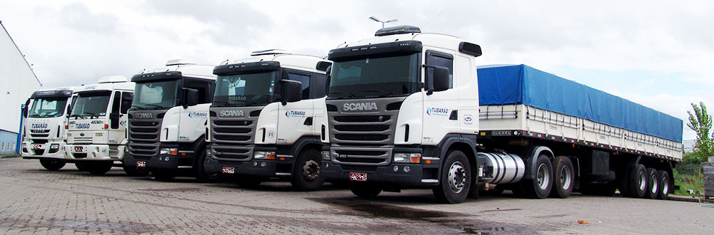
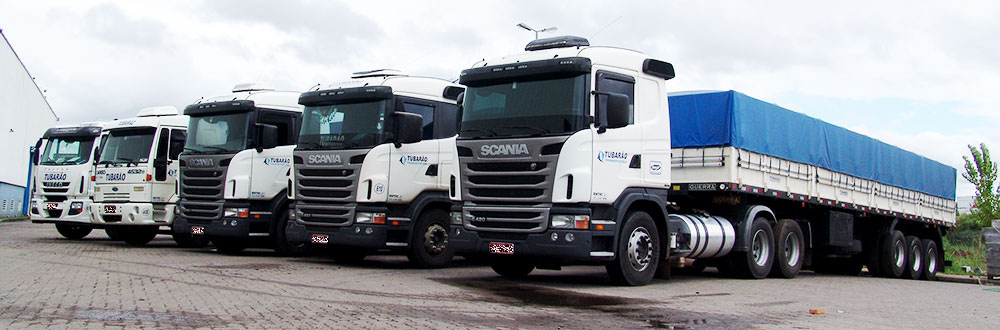

Empresa Institucional
A Tubarão Transportes iniciou suas atividades em 1º de fevereiro de 1971, na cidade de Tubarão, Estado de Santa Catarina. Com o desenvolvimento acelerado dos negócios, novos investimentos em estrutura e serviços foram necessários, e em 1973 a matriz da empresa se transfere para a cidade de Porto Alegre, Rio Grande do Sul. Desde o começo, sempre foi preocupação da empresa prestar serviços que superassem as expectativas dos clientes e tivessem os mais altos padrões de qualidade. Esta preocupação, aliada a muito trabalho e dedicação de toda sua equipe, proporcionou a consolidação de sua marca no mercado.
Matriz - Porto Alegre.
Av. Bernardino Silveira Amorim, 815 Bairro Sarandi - POA /RS
Fone: (51) 3365-9411/ 3365-7121/ 3365-9895
e-mail: tubarao@tubaraotransportes.com.br
Filial - Porto Alegre.
Fone: (51) 3373-2534
e-mail: expedicao.poa@tubaraotransportes.com.br
Filial - São Leopoldo.
Fone: (51) 3037-2329
e-mail: saoleopoldo@tubaraotransportes.com.br
Filial - Caxias do Sul.
Fone: (54) 3227-4622
e-mail: expedicao.cax@tubaraotransportes.com.br
Filial - Araquari.
Fone: (47) 3455-0031
e-mail: expedicao.ara@tubaraotransportes.com.br
Filial - São Jose.
Fone: (48) 3381-1516
e-mail: expedicao.fln@tubaraotransportes.com.br
Filial - Colombo.
Fone: (41) 3606-8003
e-mail: expedicao.col@tubaraotransportes.com.br
Filial - São Caetano do Sul.
Fone: (11) 4228-3494
e-mail: expedicao.scs@tubaraotransportes.com.br